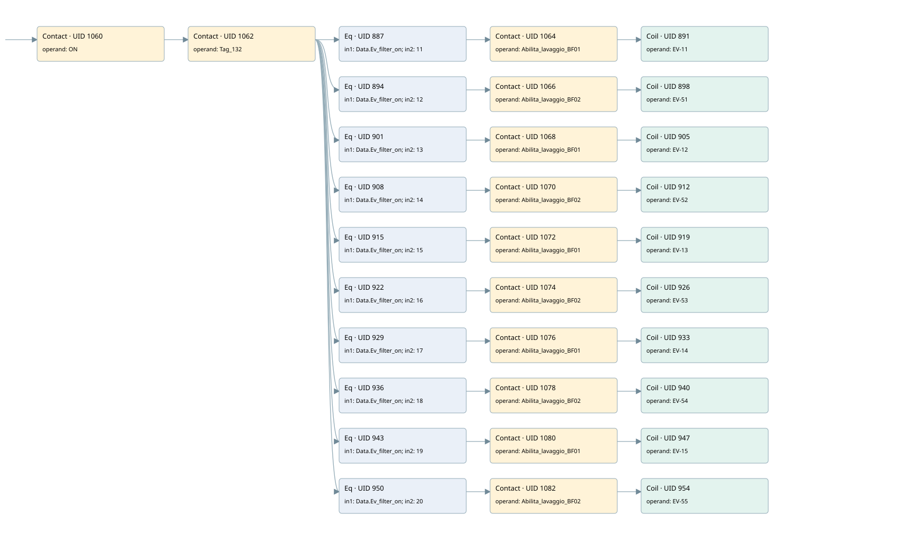

a0.0 filter 1 valve bf01first sector
filter · 검색 색인 순서 10 · 원본 내부 NID 추정 10
백업 PLF 원본의 2733120 바이트 위치에서 복원한 XML. 검색 문서 1891의 객체 키 161022003611000000000000와 연결했다. 이름 해석 42/42개. 남은 RefId는 상수 또는 미해석 참조다.
연결 구조 다시 그리기
원본 Part/PCon/Wire를 이용한 연결도다. TIA 화면의 래더 배치 또는 실행 결과를 재현한 그림은 아니다. 핀 연결은 아래 표와 원본 XML을 기준으로 읽는다. 노드 위에 마우스를 두면 피연산자 이름을 볼 수 있다.

접점·코일·블록과 피연산자
| Part UID | Gate | Negated 핀 | 연결 피연산자 |
|---|---|---|---|
| 1060 | Contact | operand = ON | |
| 1062 | Contact | operand = Tag_132 | |
| 887 | Eq | in1 = Data.Ev_filter_on; in2 = 11 | |
| 1064 | Contact | operand = Abilita_lavaggio_BF01 | |
| 891 | Coil | operand = EV-11 | |
| 894 | Eq | in1 = Data.Ev_filter_on; in2 = 12 | |
| 1066 | Contact | operand = Abilita_lavaggio_BF02 | |
| 898 | Coil | operand = EV-51 | |
| 901 | Eq | in1 = Data.Ev_filter_on; in2 = 13 | |
| 1068 | Contact | operand = Abilita_lavaggio_BF01 | |
| 905 | Coil | operand = EV-12 | |
| 908 | Eq | in1 = Data.Ev_filter_on; in2 = 14 | |
| 1070 | Contact | operand = Abilita_lavaggio_BF02 | |
| 912 | Coil | operand = EV-52 | |
| 915 | Eq | in1 = Data.Ev_filter_on; in2 = 15 | |
| 1072 | Contact | operand = Abilita_lavaggio_BF01 | |
| 919 | Coil | operand = EV-13 | |
| 922 | Eq | in1 = Data.Ev_filter_on; in2 = 16 | |
| 1074 | Contact | operand = Abilita_lavaggio_BF02 | |
| 926 | Coil | operand = EV-53 | |
| 929 | Eq | in1 = Data.Ev_filter_on; in2 = 17 | |
| 1076 | Contact | operand = Abilita_lavaggio_BF01 | |
| 933 | Coil | operand = EV-14 | |
| 936 | Eq | in1 = Data.Ev_filter_on; in2 = 18 | |
| 1078 | Contact | operand = Abilita_lavaggio_BF02 | |
| 940 | Coil | operand = EV-54 | |
| 943 | Eq | in1 = Data.Ev_filter_on; in2 = 19 | |
| 1080 | Contact | operand = Abilita_lavaggio_BF01 | |
| 947 | Coil | operand = EV-15 | |
| 950 | Eq | in1 = Data.Ev_filter_on; in2 = 20 | |
| 1082 | Contact | operand = Abilita_lavaggio_BF02 | |
| 954 | Coil | operand = EV-55 |
접점 경로를 펼친 조건식
Contact·O/A·비교기의 원본 연결을 읽기 쉽게 펼친 보조 해석이다. POWER는 전원 레일 시작을 뜻한다. 호출 블록·에지·타이머의 내부 동작과 다중 쓰기 순서는 이 표로 실행 검증하지 않았다. 미해석 핀과 RefId는 원문 연결표에서 확인한다.
| UID | 동작 | 대상 | 원본 접점 경로 | 내용 |
|---|---|---|---|---|
| 891 | Coil | EV-11 | (((ON AND Tag_132) AND [Data.Ev_filter_on = 11]) AND Abilita_lavaggio_BF01) | 조건에 따른 Coil 기록 |
| 898 | Coil | EV-51 | (((ON AND Tag_132) AND [Data.Ev_filter_on = 12]) AND Abilita_lavaggio_BF02) | 조건에 따른 Coil 기록 |
| 905 | Coil | EV-12 | (((ON AND Tag_132) AND [Data.Ev_filter_on = 13]) AND Abilita_lavaggio_BF01) | 조건에 따른 Coil 기록 |
| 912 | Coil | EV-52 | (((ON AND Tag_132) AND [Data.Ev_filter_on = 14]) AND Abilita_lavaggio_BF02) | 조건에 따른 Coil 기록 |
| 919 | Coil | EV-13 | (((ON AND Tag_132) AND [Data.Ev_filter_on = 15]) AND Abilita_lavaggio_BF01) | 조건에 따른 Coil 기록 |
| 926 | Coil | EV-53 | (((ON AND Tag_132) AND [Data.Ev_filter_on = 16]) AND Abilita_lavaggio_BF02) | 조건에 따른 Coil 기록 |
| 933 | Coil | EV-14 | (((ON AND Tag_132) AND [Data.Ev_filter_on = 17]) AND Abilita_lavaggio_BF01) | 조건에 따른 Coil 기록 |
| 940 | Coil | EV-54 | (((ON AND Tag_132) AND [Data.Ev_filter_on = 18]) AND Abilita_lavaggio_BF02) | 조건에 따른 Coil 기록 |
| 947 | Coil | EV-15 | (((ON AND Tag_132) AND [Data.Ev_filter_on = 19]) AND Abilita_lavaggio_BF01) | 조건에 따른 Coil 기록 |
| 954 | Coil | EV-55 | (((ON AND Tag_132) AND [Data.Ev_filter_on = 20]) AND Abilita_lavaggio_BF02) | 조건에 따른 Coil 기록 |
원본 배선 연결
| Wire UID | 동일 Wire 연결 끝점 |
|---|---|
| 1084 | Powerrail {} ↔ Part 1060.in |
| 997 | ORef 955 (ON) ↔ Part 1060.operand |
| 1061 | Part 1060.out ↔ Part 1062.in |
| 998 | ORef 956 (Tag_132) ↔ Part 1062.operand |
| 1063 | Part 1062.out ↔ Part 887.pre ↔ Part 894.pre ↔ Part 901.pre ↔ Part 908.pre ↔ Part 915.pre ↔ Part 922.pre ↔ Part 929.pre ↔ Part 936.pre ↔ Part 943.pre ↔ Part 950.pre |
| 999 | ORef 957 (Data.Ev_filter_on) ↔ Part 887.in1 |
| 1000 | ORef 958 (11) ↔ Part 887.in2 |
| 1001 | Part 887.out ↔ Part 1064.in |
| 1002 | ORef 959 (Abilita_lavaggio_BF01) ↔ Part 1064.operand |
| 1065 | Part 1064.out ↔ Part 891.in |
| 1004 | ORef 960 (EV-11) ↔ Part 891.operand |
| 1005 | ORef 961 (Data.Ev_filter_on) ↔ Part 894.in1 |
| 1006 | ORef 962 (12) ↔ Part 894.in2 |
| 1007 | Part 894.out ↔ Part 1066.in |
| 1008 | ORef 963 (Abilita_lavaggio_BF02) ↔ Part 1066.operand |
| 1067 | Part 1066.out ↔ Part 898.in |
| 1010 | ORef 964 (EV-51) ↔ Part 898.operand |
| 1011 | ORef 965 (Data.Ev_filter_on) ↔ Part 901.in1 |
| 1012 | ORef 966 (13) ↔ Part 901.in2 |
| 1013 | Part 901.out ↔ Part 1068.in |
| 1014 | ORef 967 (Abilita_lavaggio_BF01) ↔ Part 1068.operand |
| 1069 | Part 1068.out ↔ Part 905.in |
| 1016 | ORef 968 (EV-12) ↔ Part 905.operand |
| 1017 | ORef 969 (Data.Ev_filter_on) ↔ Part 908.in1 |
| 1018 | ORef 970 (14) ↔ Part 908.in2 |
| 1019 | Part 908.out ↔ Part 1070.in |
| 1020 | ORef 971 (Abilita_lavaggio_BF02) ↔ Part 1070.operand |
| 1071 | Part 1070.out ↔ Part 912.in |
| 1022 | ORef 972 (EV-52) ↔ Part 912.operand |
| 1023 | ORef 973 (Data.Ev_filter_on) ↔ Part 915.in1 |
| 1024 | ORef 974 (15) ↔ Part 915.in2 |
| 1025 | Part 915.out ↔ Part 1072.in |
| 1026 | ORef 975 (Abilita_lavaggio_BF01) ↔ Part 1072.operand |
| 1073 | Part 1072.out ↔ Part 919.in |
| 1028 | ORef 976 (EV-13) ↔ Part 919.operand |
| 1029 | ORef 977 (Data.Ev_filter_on) ↔ Part 922.in1 |
| 1030 | ORef 978 (16) ↔ Part 922.in2 |
| 1031 | Part 922.out ↔ Part 1074.in |
| 1032 | ORef 979 (Abilita_lavaggio_BF02) ↔ Part 1074.operand |
| 1075 | Part 1074.out ↔ Part 926.in |
| 1034 | ORef 980 (EV-53) ↔ Part 926.operand |
| 1035 | ORef 981 (Data.Ev_filter_on) ↔ Part 929.in1 |
| 1036 | ORef 982 (17) ↔ Part 929.in2 |
| 1037 | Part 929.out ↔ Part 1076.in |
| 1038 | ORef 983 (Abilita_lavaggio_BF01) ↔ Part 1076.operand |
| 1077 | Part 1076.out ↔ Part 933.in |
| 1040 | ORef 984 (EV-14) ↔ Part 933.operand |
| 1041 | ORef 985 (Data.Ev_filter_on) ↔ Part 936.in1 |
| 1042 | ORef 986 (18) ↔ Part 936.in2 |
| 1043 | Part 936.out ↔ Part 1078.in |
| 1044 | ORef 987 (Abilita_lavaggio_BF02) ↔ Part 1078.operand |
| 1079 | Part 1078.out ↔ Part 940.in |
| 1046 | ORef 988 (EV-54) ↔ Part 940.operand |
| 1047 | ORef 989 (Data.Ev_filter_on) ↔ Part 943.in1 |
| 1048 | ORef 990 (19) ↔ Part 943.in2 |
| 1049 | Part 943.out ↔ Part 1080.in |
| 1050 | ORef 991 (Abilita_lavaggio_BF01) ↔ Part 1080.operand |
| 1081 | Part 1080.out ↔ Part 947.in |
| 1052 | ORef 992 (EV-15) ↔ Part 947.operand |
| 1053 | ORef 993 (Data.Ev_filter_on) ↔ Part 950.in1 |
| 1054 | ORef 994 (20) ↔ Part 950.in2 |
| 1055 | Part 950.out ↔ Part 1082.in |
| 1056 | ORef 995 (Abilita_lavaggio_BF02) ↔ Part 1082.operand |
| 1083 | Part 1082.out ↔ Part 954.in |
| 1058 | ORef 996 (EV-55) ↔ Part 954.operand |
식별자 해석 근거 42개
| ORef UID | RefId | 이름 | IdentXmlPart 파일 | 해석 방법 |
|---|---|---|---|---|
| 955 | 52 | ON | 0594-IdentXmlPart.xml | UID/RID + search-text + NID agreement |
| 956 | 61 | Tag_132 | 0594-IdentXmlPart.xml | UID/RID + search-text + NID agreement |
| 957 | 3 | Data.Ev_filter_on | 0596-IdentXmlPart.xml | UID/RID + search-text + NID agreement |
| 958 | 80 | 11 | 0597-IdentXmlPart.xml | literal candidate: UID/RID/NID + nearby named declarations + search-text agreement |
| 959 | 63 | Abilita_lavaggio_BF01 | 0598-IdentXmlPart.xml | UID/RID + search-text + NID agreement |
| 960 | 93 | EV-11 | 0594-IdentXmlPart.xml | UID/RID + search-text + NID agreement |
| 961 | 3 | Data.Ev_filter_on | 0596-IdentXmlPart.xml | UID/RID + search-text + NID agreement |
| 962 | 94 | 12 | 0597-IdentXmlPart.xml | literal candidate: UID/RID/NID + nearby named declarations + search-text agreement |
| 963 | 65 | Abilita_lavaggio_BF02 | 0598-IdentXmlPart.xml | UID/RID + search-text + NID agreement |
| 964 | 95 | EV-51 | 0594-IdentXmlPart.xml | UID/RID + search-text + NID agreement |
| 965 | 3 | Data.Ev_filter_on | 0596-IdentXmlPart.xml | UID/RID + search-text + NID agreement |
| 966 | 96 | 13 | 0597-IdentXmlPart.xml | literal candidate: UID/RID/NID + nearby named declarations + search-text agreement |
| 967 | 63 | Abilita_lavaggio_BF01 | 0598-IdentXmlPart.xml | UID/RID + search-text + NID agreement |
| 968 | 97 | EV-12 | 0594-IdentXmlPart.xml | UID/RID + search-text + NID agreement |
| 969 | 3 | Data.Ev_filter_on | 0596-IdentXmlPart.xml | UID/RID + search-text + NID agreement |
| 970 | 98 | 14 | 0597-IdentXmlPart.xml | literal candidate: UID/RID/NID + nearby named declarations + search-text agreement |
| 971 | 65 | Abilita_lavaggio_BF02 | 0598-IdentXmlPart.xml | UID/RID + search-text + NID agreement |
| 972 | 99 | EV-52 | 0594-IdentXmlPart.xml | UID/RID + search-text + NID agreement |
| 973 | 3 | Data.Ev_filter_on | 0596-IdentXmlPart.xml | UID/RID + search-text + NID agreement |
| 974 | 100 | 15 | 0597-IdentXmlPart.xml | literal candidate: UID/RID/NID + nearby named declarations + search-text agreement |
| 975 | 63 | Abilita_lavaggio_BF01 | 0598-IdentXmlPart.xml | UID/RID + search-text + NID agreement |
| 976 | 101 | EV-13 | 0594-IdentXmlPart.xml | UID/RID + search-text + NID agreement |
| 977 | 3 | Data.Ev_filter_on | 0596-IdentXmlPart.xml | UID/RID + search-text + NID agreement |
| 978 | 102 | 16 | 0597-IdentXmlPart.xml | literal candidate: UID/RID/NID + nearby named declarations + search-text agreement |
| 979 | 65 | Abilita_lavaggio_BF02 | 0598-IdentXmlPart.xml | UID/RID + search-text + NID agreement |
| 980 | 103 | EV-53 | 0594-IdentXmlPart.xml | UID/RID + search-text + NID agreement |
| 981 | 3 | Data.Ev_filter_on | 0596-IdentXmlPart.xml | UID/RID + search-text + NID agreement |
| 982 | 104 | 17 | 0597-IdentXmlPart.xml | literal candidate: UID/RID/NID + nearby named declarations + search-text agreement |
| 983 | 63 | Abilita_lavaggio_BF01 | 0598-IdentXmlPart.xml | UID/RID + search-text + NID agreement |
| 984 | 105 | EV-14 | 0594-IdentXmlPart.xml | UID/RID + search-text + NID agreement |
| 985 | 3 | Data.Ev_filter_on | 0596-IdentXmlPart.xml | UID/RID + search-text + NID agreement |
| 986 | 106 | 18 | 0597-IdentXmlPart.xml | literal candidate: UID/RID/NID + nearby named declarations + search-text agreement |
| 987 | 65 | Abilita_lavaggio_BF02 | 0598-IdentXmlPart.xml | UID/RID + search-text + NID agreement |
| 988 | 107 | EV-54 | 0594-IdentXmlPart.xml | UID/RID + search-text + NID agreement |
| 989 | 3 | Data.Ev_filter_on | 0596-IdentXmlPart.xml | UID/RID + search-text + NID agreement |
| 990 | 108 | 19 | 0597-IdentXmlPart.xml | literal candidate: UID/RID/NID + nearby named declarations + search-text agreement |
| 991 | 63 | Abilita_lavaggio_BF01 | 0598-IdentXmlPart.xml | UID/RID + search-text + NID agreement |
| 992 | 109 | EV-15 | 0594-IdentXmlPart.xml | UID/RID + search-text + NID agreement |
| 993 | 3 | Data.Ev_filter_on | 0596-IdentXmlPart.xml | UID/RID + search-text + NID agreement |
| 994 | 110 | 20 | 0597-IdentXmlPart.xml | literal candidate: UID/RID/NID + nearby named declarations + search-text agreement |
| 995 | 65 | Abilita_lavaggio_BF02 | 0598-IdentXmlPart.xml | UID/RID + search-text + NID agreement |
| 996 | 111 | EV-55 | 0594-IdentXmlPart.xml | UID/RID + search-text + NID agreement |
검색 코드 보조 자료
참조 명칭을 찾기 위한 자료이며 실행 순서나 AND/OR 관계는 위 연결표로 확인한다.
"on" "tag_132" "data".ev_filter_on 11 #abilita_lavaggio_bf01 "ev-11" "data".ev_filter_on 12 #abilita_lavaggio_bf02 "ev-51" "data".ev_filter_on 13 #abilita_lavaggio_bf01 "ev-12" "data".ev_filter_on 14 #abilita_lavaggio_bf02 "ev-52" "data".ev_filter_on 15 #abilita_lavaggio_bf01 "ev-13" "data".ev_filter_on 16 #abilita_lavaggio_bf02 "ev-53" "data".ev_filter_on 17 #abilita_lavaggio_bf01 "ev-14" "data".ev_filter_on 18 #abilita_lavaggio_bf02 "ev-54" "data".ev_filter_on 19 #abilita_lavaggio_bf01 "ev-15" "data".ev_filter_on 20 #abilita_lavaggio_bf02 "ev-55"